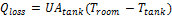

Solar Water Heating#
The SWH System page is where you specify the design parameters for the solar water heating system.
For a general description of the model, see Solar Water Heating.
For a description of the model’s results, see Results.
Hot Water Draw#
You must specify a set of 8,760 hourly values representing the hot water system’s heating load. You can either import values from a text file, or paste values from a spreadsheet or other file using your computer’s clipboard.
See Specifying the Hot Water Draw for details.
- Hourly hot water draw profile (kg/hr)
The mass of hot water drawn over an hour. Click Edit Data to specify the hot water draw.
- Scale draw profile to average daily usage
Check this box to scale the 8,760 hourly data to the average value you specify in Average Daily Hot Water Usage.
- Average daily hot water usage (kg/day)
The daily average hot water usage. SAM scales the 8,760 hourly data you specify in the Edit Data window to this annual average value.
- Total annual hot water draw (kg/year)
SAM calculates the total annual hot water draw in kilograms per year by adding the 8,760 values you specify in the Edit data window, and scaling it to the average daily hot water usage value you specify.
System#
- Tilt (degrees)
The array’s tilt angle in degrees from horizontal, where zero degrees is horizontal, and 90 degrees is vertical. As a rule of thumb, system designers often use the location’s latitude (shown on the Location and Resource page) as the optimal array tilt angle. The actual tilt angle will vary based on project requirements.
- Azimuth (degrees)
The array’s east-west orientation in degrees. An azimuth value of 180˚ is facing south in the northern hemisphere. As a rule of thumb, system designers often use an array azimuth of 180˚, or facing the equator.
- Working fluid
The fluid in the solar collector loop, either glycol or water.
- Number of collectors
The number of collectors in the system. SAM does not limit the number of collectors in the system.
- Diffuse sky model
The method SAM uses to estimate diffuse irradiance on the collector from data in the weather file.
Perez is the default option, and is suitable for most analysis. Only choose a different option if you have a reason to.
- Irradiance inputs
Determines what solar irradiance data SAM uses from the weather file.
The default option is Beam and Diffuse. Use one of the other options if you are using a weather file that is missing either beam or diffuse data (for those options, the weather file must also contain global horizontal irradiance data.)
- Albedo
The ground reflection coefficient. The default value is 0.2, which is appropriate for green grass.
- Total system collector area (m²)
Total area of all collectors in square meters:
Total Collector Area (m ²*) = Single Collector Area (m* ²*) × Number of Collectors*
- Rated system size (kW)
The system’s nominal capacity in thermal kilowatts, used to in capacity based cost and financial calculations, and to calculate the system capacity factor reported in results.**
Rated System Size (kW) = Total Collector Area (m ²) × ( FRta × 1 kW/m ² - FRUL (W/m ²-°C) * 30°C / 1000 W/kW )
The rated system size equation is derived from Equation 2.1.4 of the draft technical manual and assumes an irradiance of 1000 W/m² and temperature difference of 30°C.
DiOrio, N.; Christensen, C.; Burch, J.; Dobos, A. (DRAFT 2014). Technical Manual for the SAM Solar Water Heating Model. (PDF 150 KB)
Shading#
External shading losses are matrices of loss values that represent reduction in incident irradiance caused by shadows from nearby objects on the array.
Click Edit shading to specify external shading losses.
The 3D shade calculator calculates a set of shade loss values from a three-dimensional scene, which is a drawing of the array and nearby objects.
Click Open 3d shade calculator to open the calculator to draw the scene and generate shade losses.
Curtailment and Availability#
System availability losses are reductions in the system’s output due to operational requirements such as maintenance down time or other situations that prevent the system from operating as designed.
Note
To model curtailment, forced outages or reduction in power output required by the grid operator, use the inputs on the Grid Limits page. The Grid Limits page is not available for all performance models. For the PV Battery model, battery dispatch is affected by the system availability losses. For the PVWatts Battery, Custom Generation Profile - Battery, and Standalone Battery models, battery dispatch ignores the system availability losses.
To edit the system availability losses, click Edit losses.
The Edit Losses window allows you to define loss factors as follows:
Constant loss is a single loss factor that applies to the system’s entire output. You can use this to model an availability factor.
Time series losses apply to specific time steps.
SAM reduces the system’s output in each time step by the loss percentage that you specify for that time step. For a given time step, a loss of zero would result in no adjustment. A loss of 5% would reduce the output by 5%, and a loss of -5% would increase the output value by 5%.
Collector#
The Collector inputs describe the collector’s physical characteristics. You can either choose a set of collector parameters from a library, or enter your own.
- Enter user defined parameters
Choose this option to specify your own collector parameters.
- Choose from library
Use this option to choose a collector from the collector library. SAM applies parameters from the library to model the collector. The parameter values are listed in the Library table.
The collector library contains parameters for collectors certified by the Solar Rating and Certification Corporation (SRCC) .
Collector Parameters#
- SRCC# (library only)
The collector’s SRCC number. SAM does not use this value.
- Type (library only)
A description of the type of collector. SAM does not use this value.
- Collector area
The area of a single collector. Choose a value consistent with the area convention used in the collector efficiency equation. For example, use gross area for all SRCC data.
- FRta
Optical gain a in Hottel-Whillier-Bliss (HWB) equation, hcoll = a – b × dT .
- FRUL (W/m2-°C)
Thermal loss coefficient b in the Hottel-Whillier-Bliss (HWB) equation, hcoll = a – b × dT .
- IAM coefficient
The incident angle modifier coefficient, which is the constant b0 in the equation, IAM = 1 – b0 × (1/cos(q) – 1) .
- Test fluid
The solar system’s heat transfer fluid.
- Test flow rate
Fluid flow rate used to generate test data.
Solar Tank and Heat Exchanger#
- Solar tank volume (m3)
The actual volume of the solar storage tank. Note that the actual volume may be different from the rated volume.
- Solar tank height to diameter ratio
Defines the solar storage tank geometry, and by extension its geometry.
- Solar tank heat loss coefficient (U value) (W/m2.C)
The solar storage tank loss coefficient. Note that 1 kJ/h-m²-ºC = 3.6 W/m²-ºC.
- Solar tank maximum water temperature (C)
The maximum allowable temperature of the water in the tank in degrees Celsius. If the calculated temperature exceeds the maximum value, SAM sets the tank temperature to the maximum value. This is a simple representation of the opening of a relief valve, based on the bulk tank temperature rather than the temperature at the inlet our outlet node.
- Heat exchanger effectiveness
Heat exchanger effectiveness, where the effectiveness e, is defined as e = (Tcold-out – Tcold-in) / (Thot-in - Tcold-in) .
- Outlet set temperature (C)
The desired set temperature delivered to the user. The value in this box is used only if Use custom set temperatures is not checked.
- Mechanical room temperature (C)
The temperature where the solar tank is stored. This temperature is used to compute heat transfer to and from the storage tank as:

Piping and Pumping#
The Piping and Pumping inputs are used to calculate parasitic power requirements to pump water through the system.
- Total piping length in system (m)
Estimate of piping in system to compute pipe losses. For studies where piping loss is not of interest, reduce this length to small value, such as 0.001 m.
- Pipe diameter (m)
Average diameter of system piping
- Pipe insulation conductivity (W/m.C)
Thermal conductivity of pipe insulation in W/m-˚C
- Pipe insulation thickness (m)
Average thickness of insulation
- Pump power (W)
The electric pump’s peak power rating in Watts.
- Pump efficiency (0 to 1)
An estimate of the electric pump’s efficiency.
Custom Water Input#
- Use custom mains profile
By default, SAM calculates mains temperature data from the ambient temperature data in the weather file.
Check this box to provide mains temperature data instead of using SAM’s calculated values.
- Input annual or monthly values
Choose this option if you have a single mains temperature value to apply to all hours of the year. Click Edit values for Annual or monthly mains profile, and in the Edit Values window either type a single value and click Apply, or type a value for each month of the year.
SAM applies the value you type to each time step of the simulation, so the annual or monthly mains temperature you type should be an annual average value or a set of monthly average values.
- Input hourly mains profile
Choose this option if you have time series mains temperature data. For hourly simulations, provide a set of 8,760 values. Click Edit data for Hourly custom mains profile to import the time series data or paste it from your computer’s clipboard.
- Use custom set temperatures
Check this box and click Edit data for Hourly custom set temperatures if you want to specify custom hourly or monthly values for the outlet set temperature, and click Edit data .
If the box is not checked, SAM uses the Outlet set temperature value for every hour of the year.